Telecommunications & Networks Engineer · Dakar
DAOUDA ALI
Abdoul Latifou
Telecommunications & Networks Engineer · FTTH, QoS & NOC Monitoring
Applying network analysis and performance management to projects with an impact in Africa.
Experience in network operations, QoS monitoring and FTTH quality assurance, with a strong grounding in reporting, dashboards and KPI analysis. 5G/SDN labs built with Open5GS, UERANSIM, Suricata and Grafana.
visitor@portfolio:~$ help
Welcome to the interactive NOC.
Type help to explore the commands (profil, competences, experience, ftth, 5g, contact, clear).
visitor@portfolio:~$ ▋
01 · Profile
About me
0
years in telecommunications (since 2022)
0
operator assignments (Airtel, ALTEN)
0
telecom projects & labs
0
technologies
Telecommunications & Networks Engineer, trained at ESMT Dakar, I work as an ISP support technician at ALTEN (Bouygues Telecom). My experience covers network operations, QoS monitoring and FTTH quality assurance, with a strong grounding in reporting, dashboards and KPI analysis.
My experience in Niger (Airtel through T.M.C and RAINBOW Sarl) spans deployment, L1/L2 support and core network KPI monitoring. My thesis focuses on virtualized network function security and capacity planning in 5G networks (SDN/NFV), with labs built using Open5GS, UERANSIM, Suricata and Grafana.
FTTH / GPON
QoS
5G SA
NOC
AWS Cloud
CCNA (in preparation)
02 · Skills
My telecommunications expertise
Core & Mobile Networks
TCP/IP Networks & Routing
NOC & Operations
Network Tools & Labs
Professional skills
5G, SDN/NFV & Security
Open5GSUERANSIMOpen vSwitchRyu
NGAPPFCPGTP-U
Suricata IDSTraffic analysisFlood detectionACLSegmentation
Cloud, Development & Office Tools
AWS Cloud Foundations (badge)Docker & Kubernetes (personal labs)
PythonJavaScriptReactCytoscape.jsSQLGitREST
WordExcelPowerPointSAP
Skills radar
- FTTH & Fiber
- 5G Core & Mobile
- Monitoring & QoS
- Networks & Security
- Systems & Administration
- Tools & Labs
03 · Architecture
FTTH architecture — from the central office to the customer
Operator stack: OLT, optical splitters, distribution and termination points, CPE and end-to-end QoS monitoring. Tap a device for details.
Operator core
NROOptical central office
OLTOptical Line Terminal · GPON
Distribution
PMFiber distribution point
Splitter1:32 · 1:64
PBOOptical distribution box
Customer connection
PTOOptical termination outlet
CPE / ONTCustomer router · WiFi 6
Customer LANPC, smartphone, IoT
Monitoring
NMSNetwork Management System
KPICSSR · CDR · Latency
AlertsSLA · On-call support
[NRO] OLT Huawei MA5800 — port GPON 0/1/0 ✓
[Distribution] Splitter 1:32, optical loss 17.2 dB ✓
04 · Architecture 5G
5G SA architecture — tap each device
Standalone 5G core based on my Open5GS lab: from the UE to the Data Network, including reference interfaces (N1–N6, N8–N13, N17, N20–N22, N29).
User
UEN1 · N2
Radio access (RAN)
gNBN2 · N3
5G Core — Service Based Architecture
AMF
SMF
UPF
UDM
AUSF
NSSF
SMSF
NEF
EIR
Services & Data
IMSSh · Cx · Rx
DNN6
Tap a device to see its role
05 · NOC
Network Operations Center (NOC)
Real-time fiber quality KPI monitoring and proactive anomaly detection.
--:--:-- · MONITORING ACTIVE
Overview
Alerts
Network
Fiber link
Bandwidth
Latency
CPE status
OK
- No active critical alerts
- CPE-042 · slightly higher latency (monitored)
- 99.9% SLA met over the past 30 days
OLT Huawei MA5800Online
PM Grand Dakar #14Online
Mermoz B2B linkOnline
CPE-042Monitored
Monitored QoS parameters
LatencyPing< 20ms
JitterJitterLow
Packet LossLoss0.01%
ThroughputThroughputOptimal
Latency test — customer CPE
Simulates 10 pings to a remote CPE to measure average latency.
Waiting…
FTTH quality defect detection
Simulates a quality audit on an optical distribution box: received optical power measurement.
Waiting for audit…
KPI alert — critical CSSR
Generates an incident burst: the NOC detects and escalates automatically.
0 incidents · 0 escalations
Remote CPE restart
Simulates a remote restart through TR-069 to restore service.
CPE-001 · uptime 12d 04h
CPE-042 · uptime 07d 22h
CPE-118 · uptime 02d 15h
3/3 CPE operational ✓
06 · Experience
Professional experience
ISP support technician
16 Feb 2026 — PresentALTEN (Bouygues Telecom) | Dakar, Senegal
- Analyzed fiber quality KPIs, identified degradation trends and proposed corrective actions, helping maintain network availability above 98.5%.
- Managed FTTH defects and non-compliance: technical incident assessment, subcontractor escalation and follow-up through closure, reducing the non-compliance rate by 1.5% (relative) within the assigned scope.
- Coordinated maintenance teams and infrastructure operators to meet SLAs and network quality standards.
Network supervisor — Airtel
18 Oct 2023 — 30 Sep 2024T.M.C Niger | Niamey, Niger
- Monitored and analyzed core network KPIs (CSSR, CDR, throughput, latency), proactively detected anomalies and recommended optimizations to maintain CSSR above 95%.
- Managed QoS through automated weekly dashboards to measure user experience and identify underperforming areas.
- Regulatory compliance: prepared detailed reports for regulatory bodies (e.g. ARTP).
Field internship
20 Feb 2023 — 20 Apr 2023Niamey, Niger
- Visited B2B customer sites to diagnose and resolve connectivity issues.
- Applied IP protocols, VLANs and basic routing.
Network technician — Airtel
Sep 2022 — Dec 2022RAINBOW Sarl | Niamey, Niger
- Deployed and configured IP and LAN/WAN infrastructure, installing and commissioning Cisco/Huawei routers and switches in line with target architectures and security standards.
- L1/L2 technical support: diagnosed and resolved connectivity incidents within SLA response times.
- Reporting and continuous improvement: documented procedures, updated topologies and produced incident reports to prevent recurrence.
07 · Projects
Telecommunications projects
Completed
Secure 5G SA core — automated detection & response
Multi-site deployment of an Open5GS 5G SA core on Ubuntu virtual machines, with an end-to-end attack detection and automated blocking pipeline.
- Complete 5G SA core (AMF, SMF, UPF, UDM, AUSF, NSSF, NRF…) — 2 sites (Plateau, Mermoz) and 10 UEs simulated with UERANSIM
- Injected attacks (ICMP Flood, PFCP Flood N4/N8805) detected by Suricata and blocked through Open vSwitch (Ryu/SDN, DropFlow)
- Real-time Prometheus + Grafana monitoring: latency (ms), CPU/RAM, alerts & events, ogstun-exporter integration
0simulated 5G sites
0simulated UEs
0%automated blocking
UERANSIM (gNB)
Open5GS
OVS/Ryu
Suricata
Prometheus/Grafana
3 validated scenarios: educational, experimental and analytical.
In design
5G monitoring & cybersecurity platform (NOC/SOC web)
Real-time web interface showing the 5G core topology, Network Functions, security alerts and metrics, connecting my telecom, networking, security and development skills.
- React + TypeScript + Cytoscape.js frontend for a dynamic network map and interactive nodes
- FastAPI backend, PostgreSQL database, Redis cache and real-time WebSocket streams
- Powered by Open5GS, Suricata, Prometheus and OVS/Ryu, containerized with Docker Compose
React + Cytoscape
FastAPI
PostgreSQL/Redis
Open5GS/Suricata
NOC/SOC interface: topology, alarms, history and 5G call flows — a flagship project in my technical portfolio.
Academic study
Microwave link / Radio Mobile — ESMT
Study and capacity planning for a 1300 MHz microwave link connecting the ESMT main campus to two annexes (Diamniadio, Thiès), supervised by Dr. Soidridine Moussa Moindze.
- Main campus → Annex 1 (Diamniadio): 26.8 km — received power -76.87 dBm — margin -3.94 dB
- Main campus → Annex 2 (Thiès): 55.157 km — received power -79.14 dBm — margin -6.20 dB
- Annex 1 → Annex 2: received power -76.09 dBm — margin -3.09 dB
ESMT main campus
Diamniadio annex
Thiès annex
Negative margins identified; options studied: antenna height/gain, lower cable losses and intermediate relays.
Completed
Multi-site security with Cisco ACLs
Designed and deployed layered access control policies on a multi-LAN architecture connected through Cisco routers: who can access which service, when and where.
- Application filtering: HTTP/HTTPS to the target server only; all other traffic denied
- Per-host policies (ping+SSH, ping+FTP) and time-based access control
- Secure inter-site traffic (ping and FTP only) with weekend-specific rules
0deployed policies
0segmented LANs
0%controlled traffic flows
LAN 1/2
Router1
ACL
Router2
LAN 10/20
The same rigor as FTTH quality assurance at ALTEN: reliable, secure infrastructure.
Study / design
Centralized Cisco FTD/FMC security architecture
Designed a scalable multi-site security architecture, moving from hard-to-maintain ACLs to centralized management through a Firewall Management Center.
- Centralized security policies for multiple sites through a single FMC
- Scalability objective: add sites without rewriting each ACL locally
- Reduced risk of human error compared with distributed ACL management
FMC
FTD 1/2/3
Site A/B/C
An approach designed for scalability and centralized multi-site security.
Completed
QoS/MPLS lab & multi-site network prototype
Implemented DiffServ & MPLS-TE policies, latency/throughput measurements, multiple VLANs, OSPF inter-VLAN routing and site-to-site IPsec VPN.
0%guaranteed availability
0/7monitoring
0 VLANsegmented
Validated lab with a working site-to-site IPsec VPN and automatic failover.
Completed
4G/5G mobile network simulation — Atoll
Modeled eNodeB/gNodeB, EPC and IMS architecture and analyzed radio QoS using Atoll and MATLAB.
Validated frequency plan, coverage > 95% in a dense urban area.
Completed
BIND DNS server with conditional views
DNS server with departmental views (IT, Finance, HR) and a public view, combining DNS, ACLs, segmentation and access control.
- Configured views: vue_it, vue_finance, vue_grh, vue_public
- IT (10.10.10.0/27), Finance (10.10.10.32/27) and HR (10.10.10.64/27) segmentation
- BIND server at 10.10.10.130 with per-view ACLs
DNS BIND
IT/Finance/HR views
Public view
DNS resolution based on request origin, with per-department access control.
Completed
VoIP infrastructure — FreeRADIUS + LDAP + Asterisk
Telephony infrastructure combining LDAP/FreeRADIUS authentication and Asterisk VoIP communications, with messages stored in MySQL.
- LDAP domain dc=esmt,dc=sn for centralized authentication
- Asterisk (versions 22.4.1 then 20.6.0) for communication management
- asterisk_messages database / pending_messages table for message management
LDAP
FreeRADIUS
Asterisk
MySQL
Working centralized authentication and communication/message management.
Completed
EVE-NG / GNS3 network lab
GNS3/EVE-NG lab covering site-to-site VPN configuration, Cisco/Huawei devices, troubleshooting and enterprise network scenario validation.
Site A
VPN IPsec
Site B
Cloud
Validated scenarios: OSPF, BGP, IPsec, inter-VLAN QoS.
Completed
Linux server deployment
Deployed and administered a Linux server (DNS, web, mail) in a virtualized environment.
0deployed services
0%availability
0%hardened
Learning
Data & Business Intelligence — Power BI / Excel / Access
Building data skills: advanced Excel formulas, Access databases, Power BI dashboards and AI-assisted analysis.
- Building dashboards and visual reports in Power BI
- Data modeling and queries in Access, advanced Excel formulas
- Objective: strengthen data-driven QoS and network KPI management
Data
Analysis
Visualization
Decision
A complementary skill to my NOC/QoS practice, focused on reporting and decision support.
Completed
Multimedia web application — browser audio/video capture
Web application using browser multimedia APIs for webcam/microphone capture, recording and client-side audio/video processing.
- Video/audio capture through browser APIs (MediaStream)
- Client-side recording and processing without a dedicated backend
- Project related to my Networks & Multimedia studies at ESMT
Reusable foundation for real-time communication projects (WebRTC, video conferencing).
No projects match this filter.
Class projects · ESMT
Eight practical projects in network services, routing, cybersecurity, cloud and multimedia. Each project includes the architecture and screenshots from the shared class material.
 Class lab
Class labOpenfire & OpenLDAP
XMPP messaging and centralized LDAP authentication on Ubuntu.
Details & screenshots
Openfire & OpenLDAP
XMPP messaging and centralized LDAP authentication on Ubuntu.
Details & screenshotsNetwork setup, OpenLDAP directory, user accounts, Openfire integration and Gajim messaging tests.
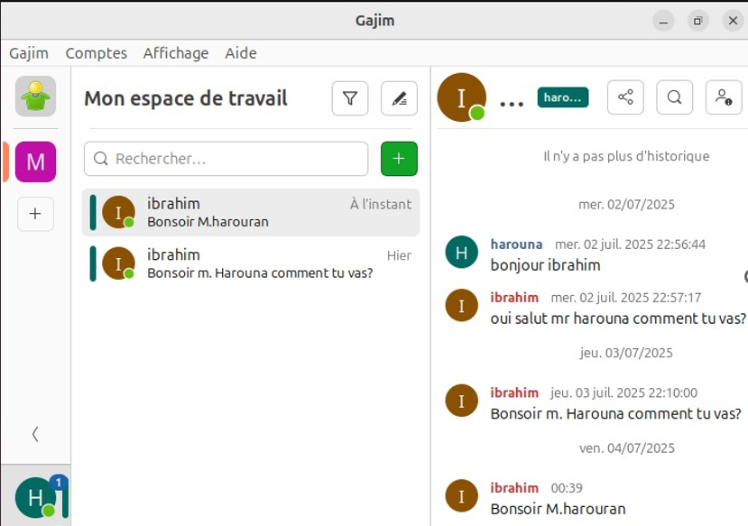
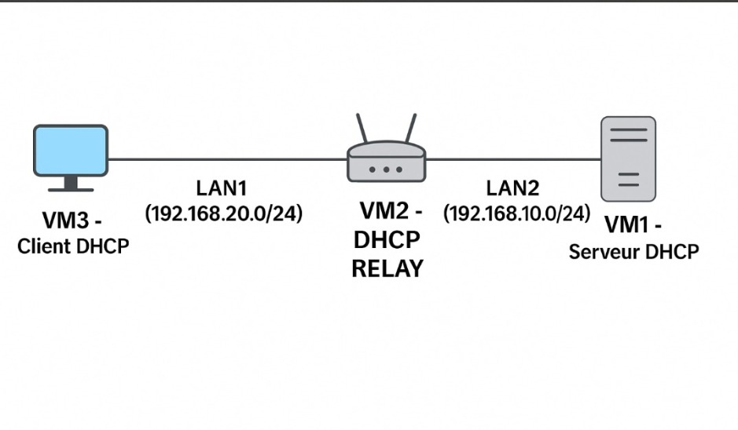
Class labDHCP Server & DHCP Relay
Dynamic IPv4 address allocation across multiple subnets.
Details & screenshots
DHCP Server & DHCP Relay
Dynamic IPv4 address allocation across multiple subnets.
Details & screenshotsDHCP server and relay configuration, lease allocation and network traffic analysis.
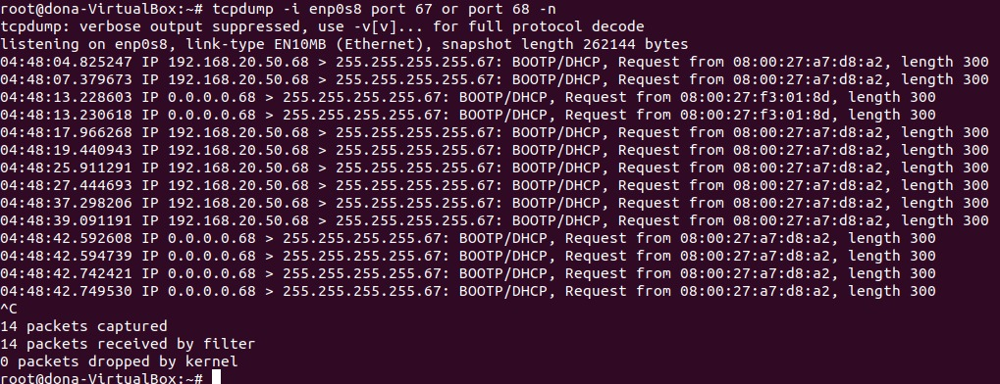
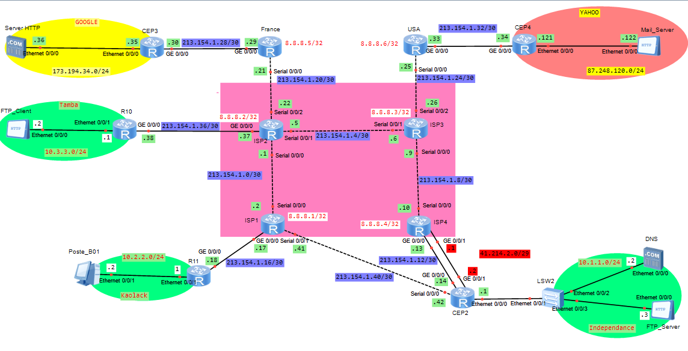
Class labHub-and-Spoke MPLS VPN
Connecting a headquarters and two branches with centralized Internet access.
Details & screenshots
Hub-and-Spoke MPLS VPN
Connecting a headquarters and two branches with centralized Internet access.
Details & screenshots
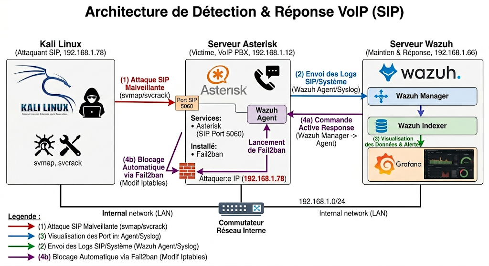
Class labSIP attack detection & response
Lab-based SIP attack simulation and security alert correlation.
Details & screenshots
SIP attack detection & response
Lab-based SIP attack simulation and security alert correlation.
Details & screenshotsAsterisk scanning and brute-force tests, Wazuh log collection, Fail2ban blocking and Grafana visualization.
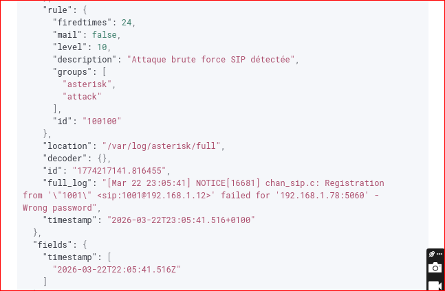
 Class lab
Class labInter-site security with GETVPN
Group encryption to secure a multi-site enterprise network.
Details & screenshots
Inter-site security with GETVPN
Group encryption to secure a multi-site enterprise network.
Details & screenshotsKey Server and Group Member configuration, GDOI key management and ESP traffic validation with Wireshark.
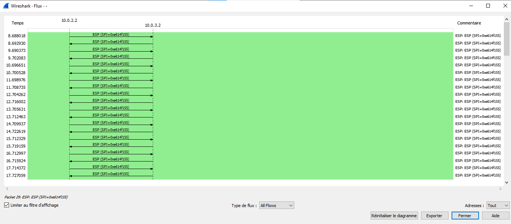
 Class lab
Class labAWS — SmartSchool
Segmented web architecture with public EC2 and a private RDS database.
Details & screenshots
AWS — SmartSchool
Segmented web architecture with public EC2 and a private RDS database.
Details & screenshotsVPC, public and private subnets, Internet Gateway, routing tables, Security Groups, EC2, RDS, S3 and IAM in AWS Academy.
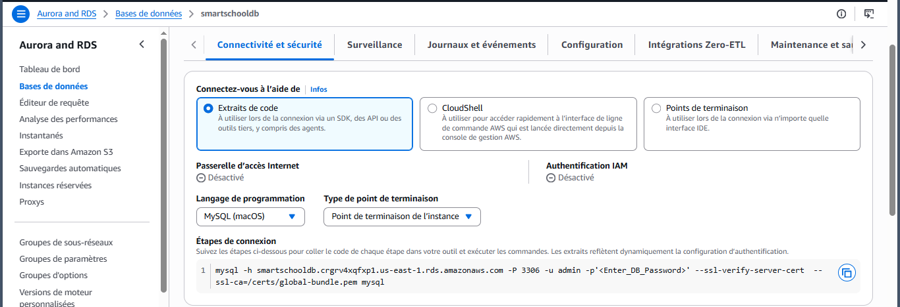
Class labAdaptive HLS streaming
Multi-bitrate encoding, HTTP delivery and video traffic analysis.
Details & screenshots
Adaptive HLS streaming
Multi-bitrate encoding, HTTP delivery and video traffic analysis.
Details & screenshotsFFmpeg encoding at 1080p, 720p, 480p and 240p, .m3u8 manifests, .ts segments, client playback and Wireshark analysis.

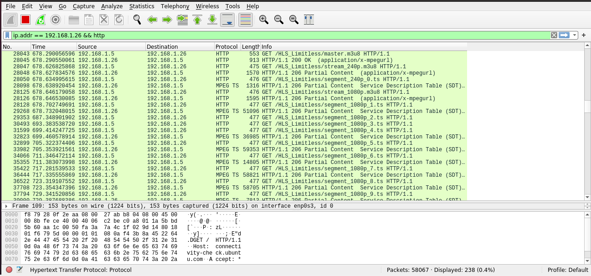
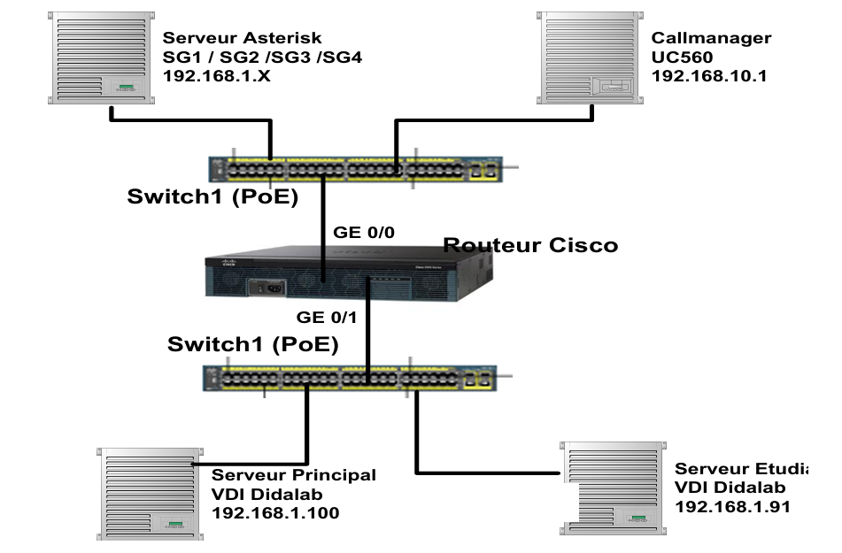
Class labVoIP/ToIP, QoS & interoperability
Advanced Asterisk services, RTP measurements and Cisco interconnection.
Details & screenshots
VoIP/ToIP, QoS & interoperability
Advanced Asterisk services, RTP measurements and Cisco interconnection.
Details & screenshotsVideo calls, Call Pickup, Hotline and CDR; jitter, latency, packet loss and codec analysis; Asterisk and Cisco UC560 interconnection.
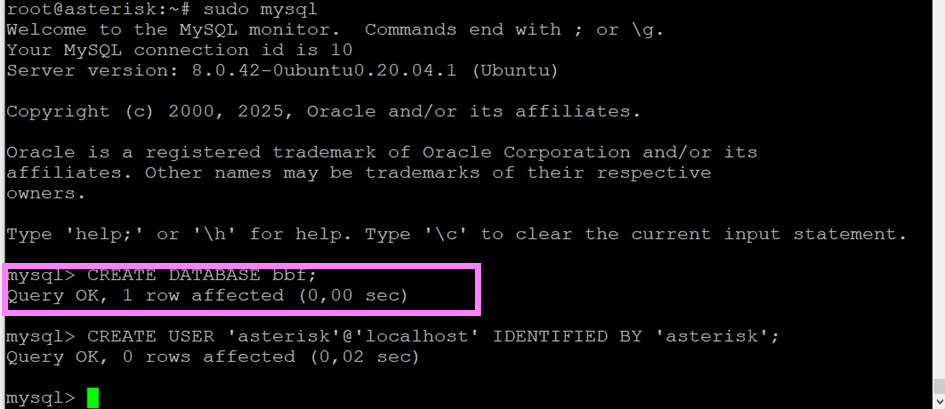

08 · Case studies
Technical challenges in detail
Technical challenges, chosen solutions and measured impacts. Tap a card to expand the details.
01
The problem
Defects and non-compliance in FTTH networks could degrade fiber service quality and availability.
The solution
- Analyzed fiber quality KPIs to identify degradation trends.
- Assessed incidents, escalated to subcontractors and followed up through closure.
- Coordinated maintenance teams and infrastructure operators to meet SLAs.
Measured impact
Network availability maintained above 98.5%; non-compliance rate reduced by 1.5% (relative) within the assigned scope.
02
The problem
Limited visibility into core network KPIs (CSSR, CDR, latency) and delayed incident detection.
The solution
- Monitored core network KPIs (CSSR, CDR, throughput, latency).
- Built and automated weekly dashboards for QoS management.
- Prepared detailed reports for regulatory bodies (e.g. ARTP).
Measured impact
Proactive anomaly detection, maintaining CSSR above 95%.
03
The problem
Commissioned IP and LAN/WAN infrastructure for Airtel customers within SLA response times.
The solution
- Installed and configured Cisco/Huawei routers and switches to match target architectures.
- L1/L2 support: diagnosed and resolved connectivity incidents.
- Documented procedures and updated topologies.
Measured impact
Delivered infrastructure within security standards and response times, with incident reports to prevent recurrence.
09 · Key figures
Telecommunications activity
0 operator assignments
0 projects & labs
0 telecom technologies
0% fiber network availability maintained above this threshold
10 · Background
Certifications & Education
Certifications
AWS Cloud Foundations
AWS Academy · Badge earned
CCNA
Cisco · In preparation
Languages
FrenchFluent · primary language
Zarma & HausaVery good
EnglishBeginner
Education
Master 2 in Telecommunications and Multimedia
ESMT Dakar · 2025 — 2026 (evening classes)
Thesis: Virtualized network function security and capacity planning in 5G networks (SDN/NFV)
Master 1 in Telecommunications and Multimedia
ESMT Dakar · 2024 — 2025
Bachelor’s degree in Computer Networks and Telecommunications
African Institute of Technology (I.A.T.) · 2022 — 2023
BTS in Computer Networks and Telecommunications
African Institute of Technology (I.A.T.) · 2020 — 2022
General Baccalaureate · Science track D · Honors
CES Yantala, Niger · 2017 — 2020
Interests
Fiber networks
QoS & monitoring
Technology watch
4G / 5G
Operator architecture
11 · Contact
Let’s discuss your project
Telecommunications & Networks Engineer with ISP support experience at ALTEN, available to discuss opportunities in telecommunications, FTTH quality, QoS monitoring and 5G networks.